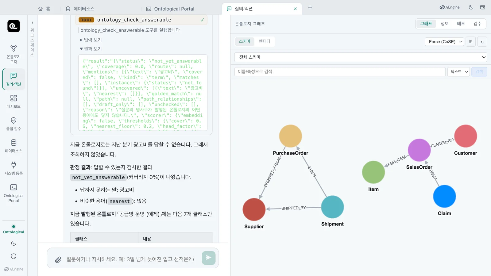
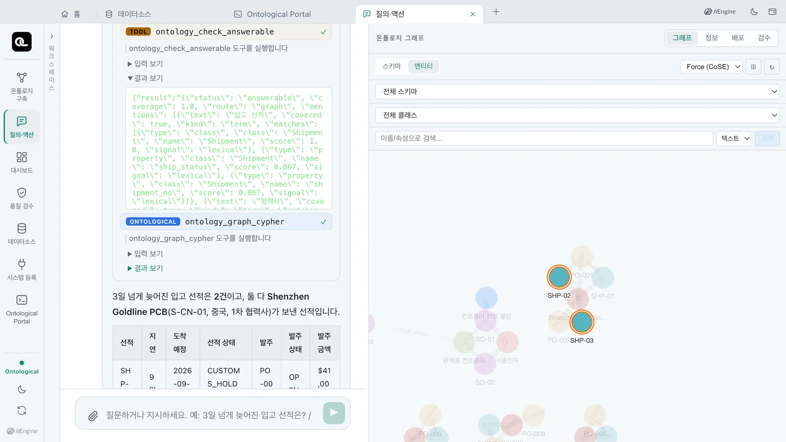
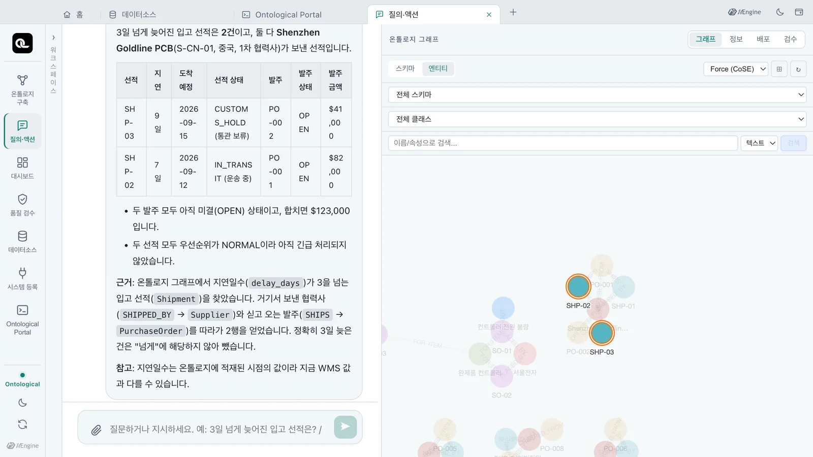

질의 에이전트는 답을 만들기 전에 발행된 온톨로지로 그 질문에 답할 수 있는지 먼저 판정합니다. 「질의·액션」 탭에서 온톨로지에 없는 질문과 골든 퀘스천을 물어 보고, 판정 결과와 답이 어떻게 달라지는지 확인합니다.
왜 먼저 보나#
온톨로지에 없는 개념을 물으면, 에이전트는 그럴듯한 Cypher를 만들어 실행하고 결과가 0건이면 “데이터가 없습니다”라고 말하기 쉽습니다. 하지만 데이터가 없는 것과 온톨로지가 그 개념을 모르는 것은 다릅니다.
그래서 질의 스킬은 스키마를 읽은 뒤, 질문마다 MCP 도구 ontology_check_answerable을 한 번 먼저 호출합니다. 이 도구는 질문과 질문 속 개념어(mentions)를 받아 다음을 확인합니다.
- 어휘 — 질문 속 말이 발행된 클래스·속성·관계·behavior·골든 퀘스천에 해당하는지
- 인스턴스 —
S-KR-01같은 이름 상수가 실제 인스턴스로 있는지 - 경로 — 질문에 해당하는 클래스들이 관계로 3단계 안에 이어지는지
모델의 추측이 아닌 규칙으로 판정합니다. 서버는 LLM을 호출하지 않습니다. 실제 측정에서는 한 번 판정하는 데 1초도 걸리지 않았습니다(6~634밀리초).
참고로 NVIDIA Auto Ontology의 check_answerable은 질문의 개체 중 온톨로지가 덮는 비율(0~1) 하나만 반환합니다. 이 도구는 상태와 함께 판정 근거도 반환합니다. 해당하지 않는 말·가장 가까운 후보·관계 경로·골든 퀘스천 일치 등입니다.
다섯 가지 판정#
status |
뜻 | 에이전트가 하는 일 |
|---|---|---|
answerable |
답할 수 있음 | 골든 퀘스천의 behavior가 맞으면 그 정의대로, 아니면 경로의 클래스를 관계로 잇는 Cypher부터 씁니다 |
partially_answerable |
일부만 답할 수 있음 | 해당하는 부분만 답하고, 해당하지 않는 말은 “발행된 온톨로지에 없다”고 밝힙니다 |
not_yet_answerable |
아직 답할 수 없음 | 조회하지 않고 멈춥니다. 없는 말과 가장 가까운 용어를 알려 줍니다 |
needs_clarification |
되물어야 함 | 이름 상수가 여러 클래스의 인스턴스와 일치하면 후보를 보여 주고 어느 것인지 묻습니다 |
not_published |
발행되지 않음 | 구축 대화에서 「발행해 줘」로 발행한 뒤 다시 물어보라고 안내합니다 |
따라 하기 — 온톨로지에 없는 질문#
- 홈에서 「질의·액션」 카드를 엽니다.
- 다음 질문을 보냅니다.
지난 분기 광고비는? - 답이 오면(실측 약 30초) 답 위의 「3개 도구 사용됨」을 눌러 펼칩니다.
ontology_check_answerable항목의 「결과 보기」를 누릅니다.

판정 결과의 핵심은 다음과 같습니다.
{
"status": "not_yet_answerable",
"coverage": 0,
"uncovered": [{"text": "광고비", "nearest": []}],
"reason": "질문의 명사구가 발행된 온톨로지의 어떤 용어에도 닿지 않습니다."
}
「광고비」는 발행된 온톨로지의 어떤 용어에도 해당하지 않습니다. 비슷한 용어도 없습니다. 에이전트는 이 판정을 보고 Cypher를 만들지 않습니다. 도구 목록에는 스키마 읽기(ontology_graph_schema)와 판정이 있고, 그래프 조회(ontology_graph_cypher)는 없습니다.

답은 “지금 온톨로지로는 지난 분기 광고비를 답할 수 없습니다. 그래서 조회하지 않았습니다.”로 시작합니다. 이어서 발행된 클래스 7개를 보여 줍니다. 금액 속성은 발주 금액(PurchaseOrder.amount_usd) 하나뿐이라고 설명합니다. 이를 광고비 대신 쓰지 않았다는 점도 밝힙니다. 답하려면 무엇을 연결하고 발행해야 하는지도 안내합니다. 답변 문장은 질문할 때마다 조금씩 다를 수 있습니다.
따라 하기 — 골든 퀘스천#
- 같은 대화에서 다음 질문을 보냅니다.
3일 넘게 늦어진 입고 선적은 어느 협력사 건이야? - 「2개 도구 사용됨」을 펼쳐
ontology_check_answerable의 「결과 보기」를 봅니다. - 판정 다음에
ontology_graph_cypher로 그래프를 조회한 것을 확인합니다.

{
"status": "answerable",
"route": "graph",
"golden_match": {"question": "3일 넘게 늦어진 입고 선적은 어떤 것이고, 어느 협력사의 어느 발주 건인가?", "score": 0.675},
"path": ["Shipment", "Supplier"],
"path_relationships": [{"from": "Shipment", "name": "SHIPPED_BY", "to": "Supplier"}]
}
질문은 구축할 때 검증한 골든 퀘스천과 일치했습니다(golden_match). 「입고 선적」은 Shipment, 「협력사」는 Supplier에 해당합니다. 둘은 SHIPPED_BY 관계로 이어집니다. 에이전트는 이 경로대로 조회해 답합니다.

질문 속 상수#
질문에 S-KR-01 같은 번호나 이름이 있으면 실제 인스턴스인지 판정합니다. “S-KR-01 협력사의 미결 발주는?”을 판정한 결과입니다.
{
"status": "answerable",
"mentions": [{"text": "S-KR-01", "kind": "constant",
"instance": {"status": "resolved", "class": "Supplier", "label": "한빛정밀"}}],
"path": ["Supplier", "PurchaseOrder"],
"path_relationships": [{"from": "PurchaseOrder", "name": "ORDERED_FROM", "to": "Supplier"}]
}
S-KR-01은 협력사 「한빛정밀」로 확인됐습니다. 에이전트는 이름을 다시 찾지 않고 이 키에서 조회를 시작합니다. 없는 번호였다면 instance.status가 not_found로 나옵니다.
답할 수 없을 때 — 온톨로지를 키우기#
not_yet_answerable은 실패가 아니라 다음에 할 일을 알려 주는 결과입니다. 광고비를 묻고 싶다면 광고비가 담긴 데이터를 데이터소스로 연결합니다(5장). 구축 의도와 골든 퀘스천에 그 질문을 넣습니다. 그런 다음 다시 구축하고 발행하면 됩니다(12장). 13장 확인 문제의 “안전재고보다 재고가 적은 품목”도 같은 경우입니다.
확인 문제
- “지난 분기 광고비는?”에 에이전트가 Cypher를 실행하지 않은 이유는 무엇인가요?
- 판정 도구는 LLM을 부르나요? 무엇을 기준으로 판정하나요?
- 질의·액션 탭에서 “S-KR-01 협력사의 미결 발주는?”을 물어보세요. 판정은 무엇이고,
S-KR-01은 무엇으로 확인되나요?
정답 보기
- 판정이
not_yet_answerable이었기 때문입니다. 「광고비」가 발행된 온톨로지의 어떤 용어에도 해당하지 않았습니다. 이 판정이 나오면 질의 스킬은 조회하지 않고 멈춥니다. 그런 다음 없는 말과 가장 가까운 용어를 알려 줍니다. - 부르지 않습니다. 질문 속 말이 발행된 클래스·속성·관계·behavior·골든 퀘스천에 해당하는지 확인합니다(어휘). 이름 상수가 실제 인스턴스인지도 확인합니다(인스턴스). 질문에 해당하는 클래스들이 관계로 3단계 안에 이어지는지도 확인합니다(경로). 모두 규칙에 따라 판정합니다.
answerable입니다.S-KR-01은 협력사(Supplier) 「한빛정밀」로 확인되고, 경로는PurchaseOrder -[:ORDERED_FROM]-> Supplier입니다. 미결 발주는PO-008($27,000) 한 건입니다(PO-003은CLOSED). 검산:MATCH (po:PurchaseOrder)-[:ORDERED_FROM]->(s:Supplier {supplier_id: 'S-KR-01'}) RETURN po.po_id, po.status, po.amount_usd